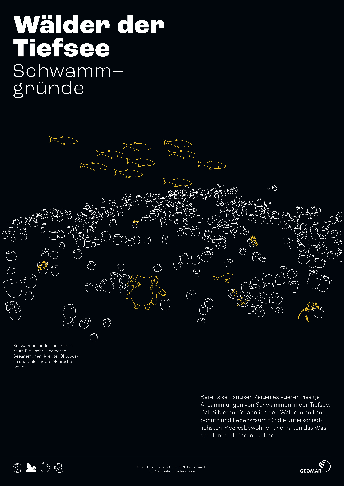
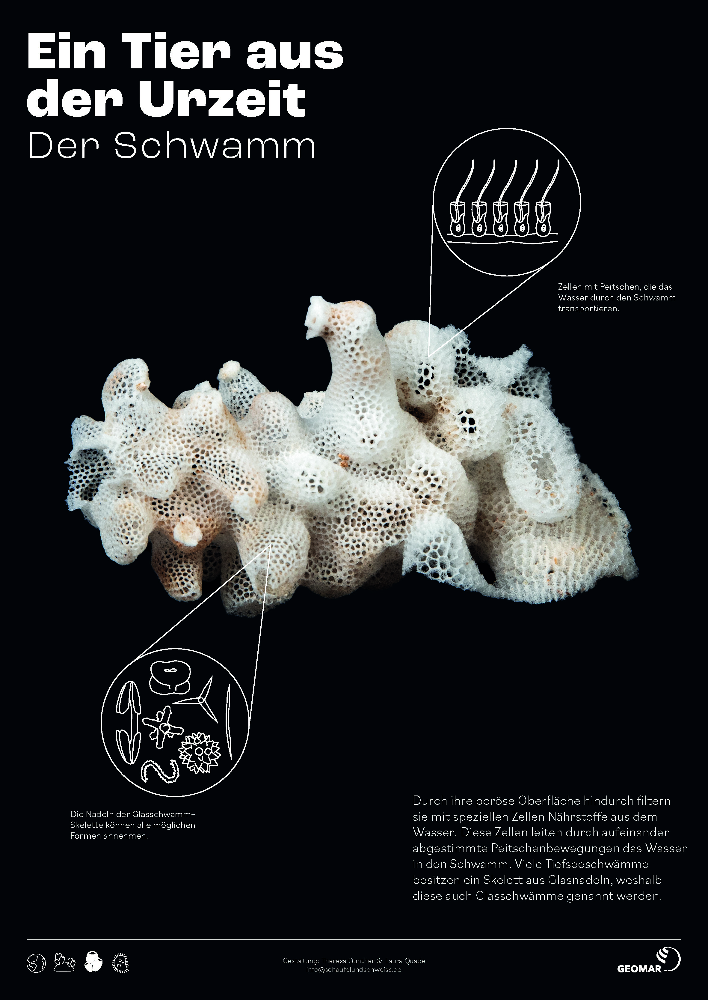
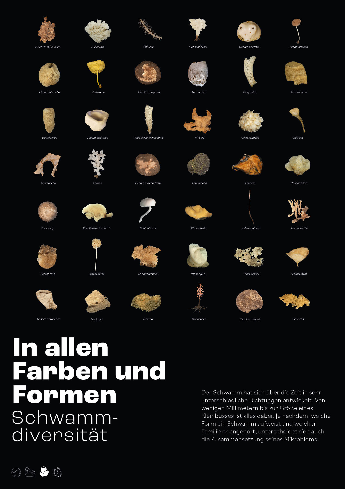
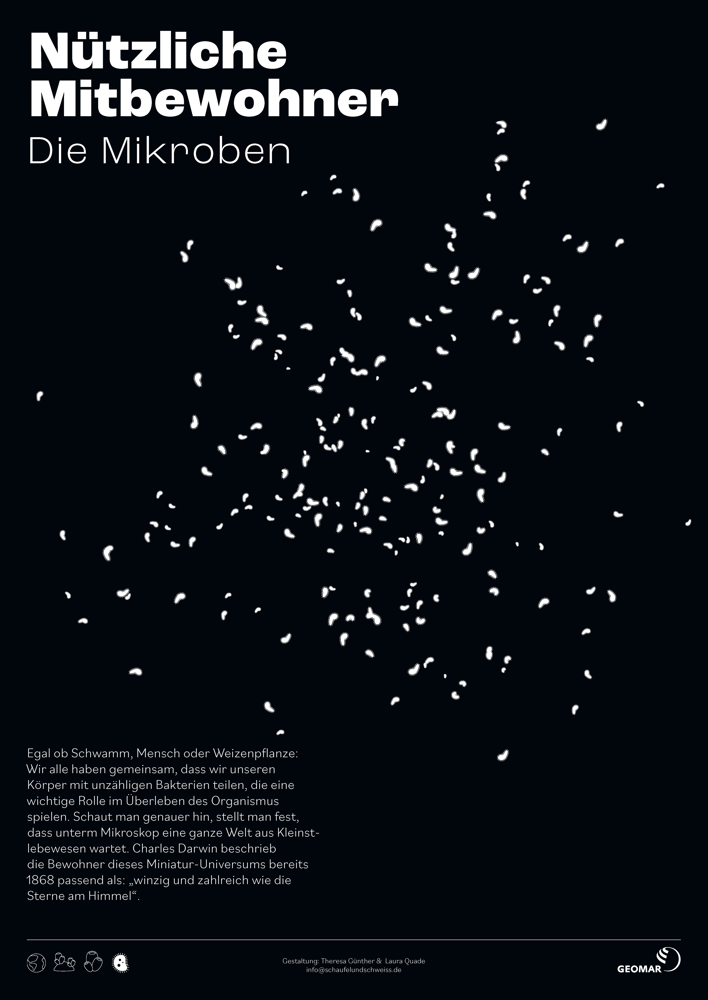
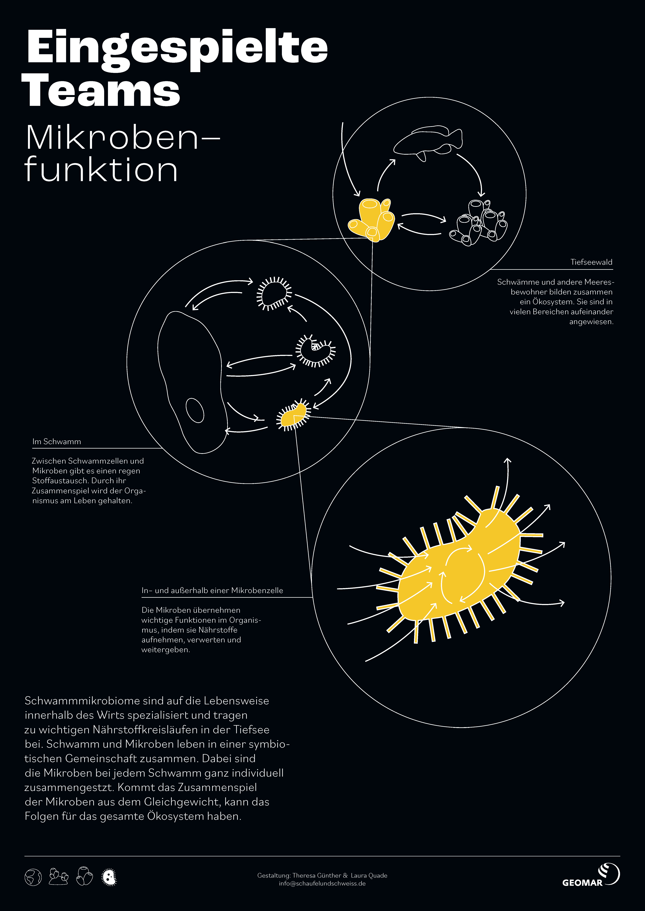
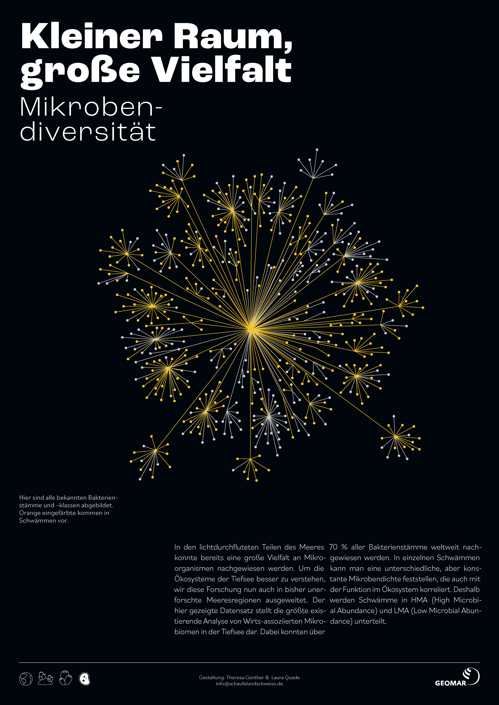
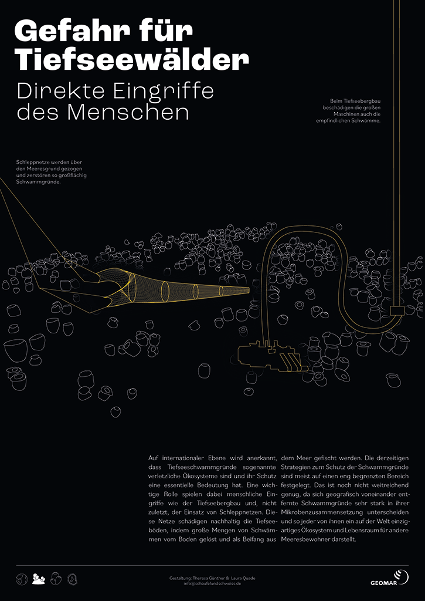
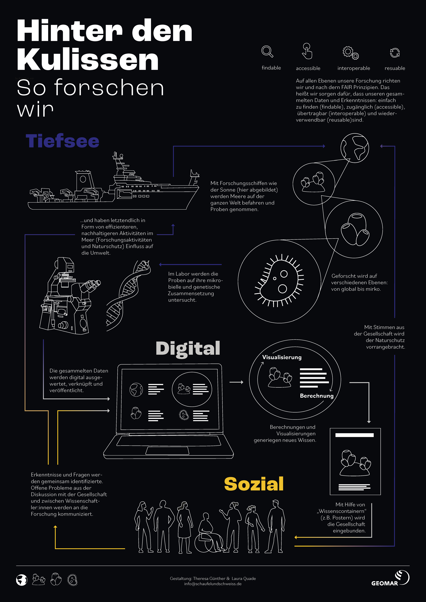

Das geheime Leben in Tiefsee-Urwäldern

Der tiefe Ozean ist einer der abgelegensten und unzugänglichsten Orte der Erde, aber er ist die Heimat einiger der bizarrsten und wundersamsten Kreaturen. Urzeitliche Schwämme mit Skeletten aus Glas kommen in großen Ansammlungen in der Tiefsee vor. Diese Tiere leben in Symbiose mit einer Vielzahl von Mikroben und erfüllen zusammen mit ihren mikroskopisch kleinen Partnern wichtige Ökosystemfunktionen. Unsere Augmented-Reality-Posterserie lädt Sie ein, in die Tiefsee einzutauchen und die unsichtbare Schönheit von Tiefseeschwämmen und ihren Mikrobiomen zu entdecken.
Globale Erfolgsstory

"hier komt ganz viel text rein lalalalalalalalalfaie ereoiuerprhc erghherg rhgrgu hrguh iguhiguh ighiruhgsiuhgsioug rsuigh iu gdiugh iug hiuhg diu gd"
Wälder der Tiefsee

"hier komt ganz viel text rein lalalalalalalalalfaie ereoiuerprhc erghherg rhgrgu hrguh iguhiguh ighiruhgsiuhgsioug rsuigh iu gdiugh iug hiuhg diu gd"
Ein Tier aus der Urzeit

"hier komt ganz viel text rein lalalalalalalalalfaie ereoiuerprhc erghherg rhgrgu hrguh iguhiguh ighiruhgsiuhgsioug rsuigh iu gdiugh iug hiuhg diu gd"
In allen Formen und Farben

"hier komt ganz viel text rein lalalalalalalalalfaie ereoiuerprhc erghherg rhgrgu hrguh iguhiguh ighiruhgsiuhgsioug rsuigh iu gdiugh iug hiuhg diu gd"
Nützliche Mitbewohner

"hier komt ganz viel text rein lalalalalalalalalfaie ereoiuerprhc erghherg rhgrgu hrguh iguhiguh ighiruhgsiuhgsioug rsuigh iu gdiugh iug hiuhg diu gd"
Eingespielte Teams

"hier komt ganz viel text rein lalalalalalalalalfaie ereoiuerprhc erghherg rhgrgu hrguh iguhiguh ighiruhgsiuhgsioug rsuigh iu gdiugh iug hiuhg diu gd"
Kleiner Raum, große Vielfalt

"hier komt ganz viel text rein lalalalalalalalalfaie ereoiuerprhc erghherg rhgrgu hrguh iguhiguh ighiruhgsiuhgsioug rsuigh iu gdiugh iug hiuhg diu gd"
Wie geht es weiter?

"hier komt ganz viel text rein lalalalalalalalalfaie ereoiuerprhc erghherg rhgrgu hrguh iguhiguh ighiruhgsiuhgsioug rsuigh iu gdiugh iug hiuhg diu gd"
Gefahr für Tiefseewälder

"hier komt ganz viel text rein lalalalalalalalalfaie ereoiuerprhc erghherg rhgrgu hrguh iguhiguh ighiruhgsiuhgsioug rsuigh iu gdiugh iug hiuhg diu gd"
Hinter den Kulissen

"hier komt ganz viel text rein lalalalalalalalalfaie ereoiuerprhc erghherg rhgrgu hrguh iguhiguh ighiruhgsiuhgsioug rsuigh iu gdiugh iug hiuhg diu gd"
Glossar
abiotisch
nicht belebt/unbelebt; Umweltfaktor, z.B. Licht oder Temperatur, dem ein Lebewesen ausgesetzt ist.
Adaption
Wenn sich die Umweltbedingungen in dem Lebensraum eines Lebewesens verändert, verändert sich über die Zeit auch das Lebewesen z.b. in seinem Aussehen oder seinen Eigenschaften um weiterhin in diesem Lebensraum überleben zu können. Dies geschieht über viele Generationen, sodass nicht das überleben des Individuums sondern der Art gesichert ist.
Anpassung
Im weiteren Sinne der bewusste oder unbewusste Prozess der Annäherung des sozialen Verhaltens an das in bisher nicht vertrauten sozialen Bereichen, Schichten oder Gebilden herrschende Verhalten; im engeren Sinne Sozialisation Wiederherstellung/ Restoration (Altlasten), "Therapie"/Caring Zerbrechlichkeit (filigran, feinsinnig)
Arbeitsteilung
Arbeitsteilung ist ein Element der Kooperation (Zusammenwirkung) und bezeichnet in erster Linie den Prozess der Aufteilung der Arbeit unter Menschen.
Art
Eine Art ist eine systematische Kategorie der biologischen Klassifikation. Die biologische Klassifikation teilt alle Lebewesen in Gruppen nach ihrer Abstammung und Verwandtschaft ein. Die Art ist die niedrigste Rangstufe der Klassifikation.
Biodiversität
Biodiversität kann auch als biologische Vielfalt bezeichnet werden. Gemeint ist damit, die Vielfalt an unterschiedlichen Ökosystemen und Arten (von Tieren, Pflanzen, Pilzen, Mikroorganismen) auf der Erde bzw. in einem bestimmten Lebensraum sowie die genetische Vielfalt innerhalb einer Art.
biotisch
belebt/lebendig; Faktor, dem ein Lebewesen in seiner Umwelt durch den Kontakt mit anderen Lebewesen ausgesetzt ist.
Container
Mit der Container-Metapher ist die Vorstellung von Wörtern oder Sätzen als Behälter verbunden, in denen objektiv bestimmbare Bedeutungen eingeschlossen sind. Rezeption besteht in dieser Metapher darin, die Bedeutungen den Behältern als solche wieder zu entnehmen. Bedeutungen, Sinn und Gedanken können nach dieser Vorstellung in einen Container „verpackt“ und aus diesem wieder „entpackt“ werden. Naive Vorstellungen gehen dabei von einer Identität der Bedeutungen aus.
Datenvisualisierung
Die Darstellung von Daten in z.b. graphischer Form, um eine visuelle Erfassung zu ermöglichen und dadurch neue Erkenntnisse aus den Daten zu gewinnen und wissenschaftliche Fragen zu beantworten.
Desoxygenierung
Verringerung des Sauerstoffgehalts im Meer.
Detaillierungsgrad/ Auflösungsgrad (Tiefe/Weite)/ Ebenen der Komplexität
Ein Ökosystem ist ein sehr komplexes System. Entsprechend der zu beantwortenden Fragestellung kann es auf verschiedenen Detail Ebenen betrachtet/untersucht werden. Entweder sehr allgemein oder sehr detailliert, von der globalen Ebene bis zur mikroskopischen Ebene.
Auf der Makroebene werden große Aggregate oder Systeme (z. B. Politisches System DEU) untersucht. Auf der Mesoebene stehen die Teile dieser Systeme (z. B. demokratische Institutionen wie Parteien, Parlamente, Regierungen) im Fokus. Auf der Mikroebene interessieren dann z. B. die Handlungen und Entscheidungen der Akteure und/oder die Beziehungen zwischen den Akteuren.
Digitaler Zwilling
Ein digitaler Zwilling ist ein digitales Modell der physischen Wirklichkeit und steht in Interaktion mit dieser.
Diversität
Ein Konzept der Soziologie zur Unterscheidung und Anerkennung von Gruppen- und individuellen Merkmalen. Diese Unterschiede lassen sich auf individueller, institutioneller und struktureller Ebene betrachten und betreffen alle Menschen, nicht nur einzelne Gruppen.
DNA
Erbgut eines Organismus. Hier sind alle genetischen Informationen gespeichert.
Dysbiose
Eine Dysbiose ist ein Ungleichgewicht einer Gemeinschaft an Mikroorganismen, z.B. dem Mikrobiom. Diese tritt auf wenn durch ein Ereignis eine oder mehrere Arten von Mikroorganismen nicht mehr in der Gemeinschaft vorkommen oder in einer höheren oder niedrigeren Individuenzahl als gewöhnlich.
Erwärmung
Erwärmung der Wassertemperatur der Meere in Folge der globale Erwärmung.
Evolution
ist der Prozess der (Weiter)Entwicklung von Lebewesen über eine sehr lange Zeitspanne. So hat sich über Jahrmillionen das Leben auf der Erde von den frühesten Formen bis zur heutigen Vielfalt entwickelt.
Familie
iEine Familie ist eine systematische Kategorie der biologischen Klassifikation. Die biologische Klassifikation teilt alle Lebewesen in Gruppen nach ihrer Abstammung und Verwandtschaft ein. Die Familie ist eine niedrige Rangstufe der Klassifikation (zwischen Ordnung und Gattung).
Eine Familie bezeichnet soziologisch eine durch Partnerschaft, Heirat, Lebenspartnerschaft, Adoption oder Abstammung begründete Lebensgemeinschaft, meist aus Eltern oder Erziehungsberechtigten sowie Kindern bestehend, gelegentlich durch weitere, mitunter auch im selben Haushalt lebende Verwandte oder Lebensgefährten erweitert. Die Familie beruht im Wesentlichen auf Verwandtschaftsbeziehungen.
Funktion
Die Funktion kann auch als Rolle oder Aufgabe eines Organismus bezeichnet werden, die dieser in seinem Ökosystem übernimmt.
Die Funktion kann auch als Rolle oder Aufgabe eines Individuums oder Teilsystems bezeichnet werden, die dieses in einer Gesellschaft oder Organisation übernimmt.
Heterachie
Heterarchie ist ein System von Elementen, die nicht in einem Über- und Unterordnungsverhältnis stehen, sondern mehr oder weniger gleichberechtigt nebeneinander.
Hierachie
In der Soziologie ist Hierarchie die Bezeichnung für die Struktur der vertikalen Gliederung der Positionen in einer Organisation oder Gesellschaft.
Holobiont
Ein Holobiont bezeichnet ein Lebewesen in seiner Lebensgemeinschaft mit allen seinen assoziierten Mikroorganismen.
Holismus
Bei einem holistischen Forschungsansatz wird versucht ein Ökosystem in seiner Ganzheit mit allen seinen Details zu betrachten, zu untersuchen und zu verstehen.
Holismus auch Ganzheitslehre, ist die Vorstellung, dass natürliche Systeme oder auch nicht-natürliche, z. B. soziale Systeme und ihre Eigenschaften, als Ganzes und nicht nur als Zusammensetzung ihrer Teile zu betrachten sind
Interdependenz
Unter „sozialer“ Interdependenz ist zu verstehen, dass Menschen in ihrem Dasein aufeinander eingestellt und angewiesen sind.
Lebensraum
Der Lebensraum bezeichnet in der Biologie den charakterischen Aufenthaltsbereich einer bestimmten Art von Lebewesen.
In den Humanwissenschaften bezeichnet der Begriff “Lebensraum” den (bewohnten oder beanspruchten) Raum einer sozialen Gruppe.
Mikroben
Mikroben sind mikroskopisch kleine Organismen. In unserem Falle kann der Begriff Mikrobe mit dem Begriff Bakterium gleichgesetzt werden.
Mikrobiom
Ein Mikrobiom ist die Gesamtheit aller Mikroorganismen, die auf/in einem Lebewesen leben. Darunter zählen z.B. Bakterien, Pilze, Viren.
Nachhaltigkeit
Nutzung von möglichst nicht invasiven und umweltschonenden Methoden um Proben zu sammeln. Der Aufbau von sinnvollen SOPs und die Arbeit nach diesen. Die Nutzung von Forschungsdaten nach den FAIR Prinzipien.
Soziale Nachhaltigkeit beschreibt die bewusste Organisation von sozialen und kulturellen Systemen zur dauerhaften Aufrechterhaltung der gesellschaftlichen Strukturen und individuellen Gesundheitszustände.
Nahrungsnetz
Bezeichnung für das komplexe Gefüge der Nahrungsbeziehungen zwischen Lebewesen innerhalb eines Ökosystems.
Netzwerk
Gesamtheit von Elementen und Verbindungen, die zwischen den Elementen bestehen. Netzwerke werden durch ihre Struktur und durch ihre jeweils spezifische Funktion definiert. Sie können prinzipiell differenziert werden nach ihrer Größe (Ausdehnung, Zahl der Elemente), nach ihrer Komplexität (Zahl der Verknüpfungen), nach Art (Qualität) der Elemente und Verknüpfungen und nach ihrer Funktion. Z.B. ein Nahrungsnetz.
Ein soziales Netzwerk bezeichnet ein Geflecht aus wechselseitigen Interaktionen zwischen mehreren Personen.
Ökologie
Beziehungsgefüge aller Lebewesen eines bestimmten Gebiets untereinander und mit ihrem Lebensraum.
Organismus
Der Begriff „Organismus“ kann als Synonym für ein einzelnes Lebewesen verwendet werden.
Phylogenie
Die Phylogenie beschreibt die Abstammung und Verwandtschaftsbeziehungen aller Arten von Lebewesen.
Reduktionistisch
Bei einem reduktionistischen Forschungsansatz werden nur Teile eines Ökosystems möglichste vereinfacht untersucht, z.B. das Nahrungsnetz der Lebewesen in diesem Ökosystem.
Resilienz
Der Begriff bezeichnet in der neueren Soziologie die Fähigkeit von Gesellschaften, externe Störungen zu verkraften, ohne dass sich ihre wesentlichen Systemfunktionen ändern.
Schwamm
Schwämme (wissenschaftlicher Name: Porifera) sind Tiere, die sesshaft im Meer leben. Sie haben keine Organe, Muskeln oder Nerven. Sie filtern Meereswasser durch ihren Hohlraum und ernähren sich von ind diesem Meereswasser enthaltenen Nahrungspartikeln.
Schwammgrund
Schwammgründe sind Ansammlungen von Schwämmen am Meeresboden oder an einem Hang eines Seebergs.
Seeberg
Seeberge sind wie der Name verrät Berge, die sich komplett unter Wasser im Meer befinden.
Soziales System
Soziales System ist ein zentraler Begriff der soziologischen Systemtheorie, der eine Grenze zieht zum Ökosystem, zum biologischen Organismus, zum psychischen System sowie zum technischen System. Sie alle bilden die Umwelt sozialer Systeme. Mindestvoraussetzung für ein soziales System ist die Interaktion mindestens zweier Personen.
Stamm
Der Stamm ist eine systematische Kategorie der biologischen Klassifikation. Die biologische Klassifikation teilt alle Lebewesen in Gruppen nach ihrer Abstammung und Verwandtschaft ein. Der Stamm, auch Phylum genannt, ist die zweithöchste Rangstufe der Klassifikation (zwischen Reich und Klasse). Zum Beispiel sind Schwämme ein Tierstamm.
Bezeichnet eine gesellschaftliche Organisationsform, deren Mitglieder meist durch gemeinsame Abstammung, Sprache oder Religion zusammengehalten werden.
Stoffkreisläufe
Als Stoffkreislauf bezeichnet man eine periodische Umwandlung von chemischen Verbindungen, in deren Verlauf – nach einer Reihe von chemischen Reaktionen – erneut der Ausgangsstoff entsteht.
Stressoren
Stressoren sind Bedingungen in einem Ökosystem, die sich verändern und dadurch Druck auf Lebewesen in dem Ökosystem ausüben sich anzupassen.
Symbiose
Beziehung zwischen Lebewesen verschiedener Arten zum wechselseitigen Nutzen.
Tiefsee
Die Tiefsee beginnt unterhalb von 200 m Meerestiefe. Bis hier dringt kein Sonnenlicht und es ist stockdunkel. Zudem herrscht ein großer Druck durch die darüberliegenden Wassermassen.
Toleranz/Widerstandsfähigkeit
Die Fähigkeit bestimmte Umweltfaktoren oder Stressoren in einem bestimmten Bereich längerfristig zu ertragen (ohne das eine Anpassung nötig ist.
Versauerung
Versauerung ist die Veränderung des pH-Wertes der Meere durch eine erhöhte Aufnahme von Kohlenstoffdioxid (CO2)
Verschachtelung/ Hierarchie/ Modularität
Ökosysteme sind offene Systeme, das heißt es finden immer Wechselwirkungen aus dem inneren des Systems mit dem Bereich außerhalb des Systems statt. Zudem kann der betrachtete Lebensraum beliebig vergrößert/erweitert werden – dann sind die vorher nach außerhalb gehenden Wechselwirkungen nun innerhalb des Systems usw. Daher sind Ökosysteme ineinander verschachtelte Systeme. Es kann beliebig eine höhere oder niedrigere Ebene betrachtet werden. EIne Hierarchie bezeichnet in der Biologie den Aufbau eines Systems aus übergeordneten und untergeordneten Elementen z.B. Nahrungsketten.
Wirts-assoziation
Lebewesen, die in oder an einem anderen Lebewesen (=Wirt) leben, nennt man Wirts-assoziierte Lebewesen.
Zirkularität / Zusammenhänge
Kreisläufe von Stoffen, Energie o.ä. in z.B. einem Ökosystem.
Zirkularität bezeichnet das Verhalten von Elementen eines Systems, bei denen das Verhalten zugleich Ursache und Wirkung von anderen Elemente dieses Systems ist. Die Phänomene beeinflussen und bedingen sich wechselseitig. Das Tun des Einen bewirkt das Tun des Anderen.